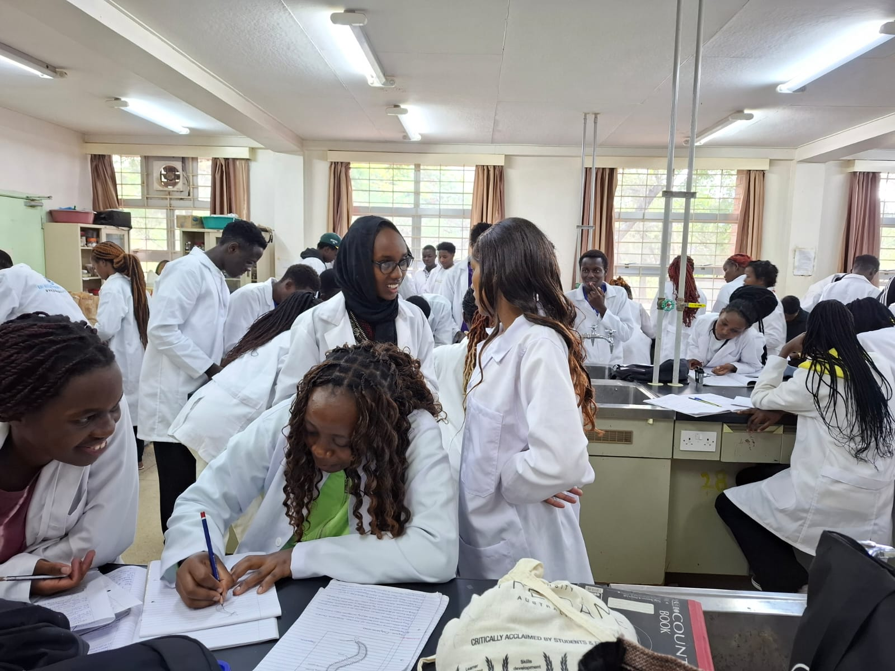
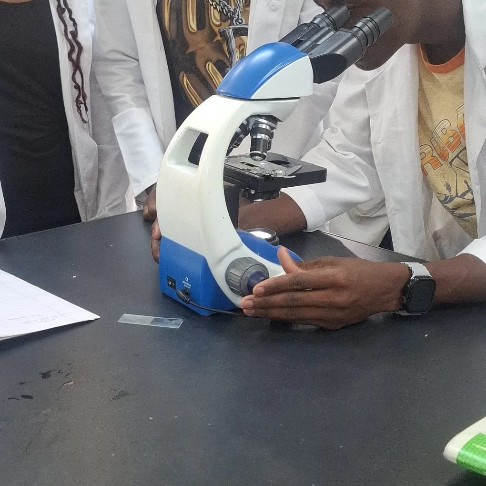

Education
- BSc. Environmental Science, JKUAT (September 2025 to present)
- DevOps Engineering, Moringa School (graduated November 2025)
- Loreto High School (2021 to 2024)
Skills and Competencies
- DevOps practices and automation
- Git and version control
- Docker (containers)
- Kubernetes (container orchestration)
- Linux
- Microsoft Word (advanced formatting)
- HTML and CSS (beginner)
What I Do as a DevOps Engineer
A DevOps engineer connects the people who write software with the systems that run it. I help apps and websites get built, tested and released quickly and safely. I automate repeated work, set up servers and cloud systems, monitor them, and fix problems early.
Research Interests
Sustainability, environmental conservation, and using data engineering and DevOps automation to turn environmental data into smarter decisions for the planet.
Academic Projects and Certifications
| Project or Certificate | Year | What I learned |
|---|---|---|
| DevOps Engineering certification, Moringa School | 2025 | Git, Docker, Kubernetes and Linux for building and running software reliably |
| Lab 1: Professional CV | 2026 | Professional document formatting in Word |
| Lab 2: Portfolio website | 2026 | HTML, CSS and databases |